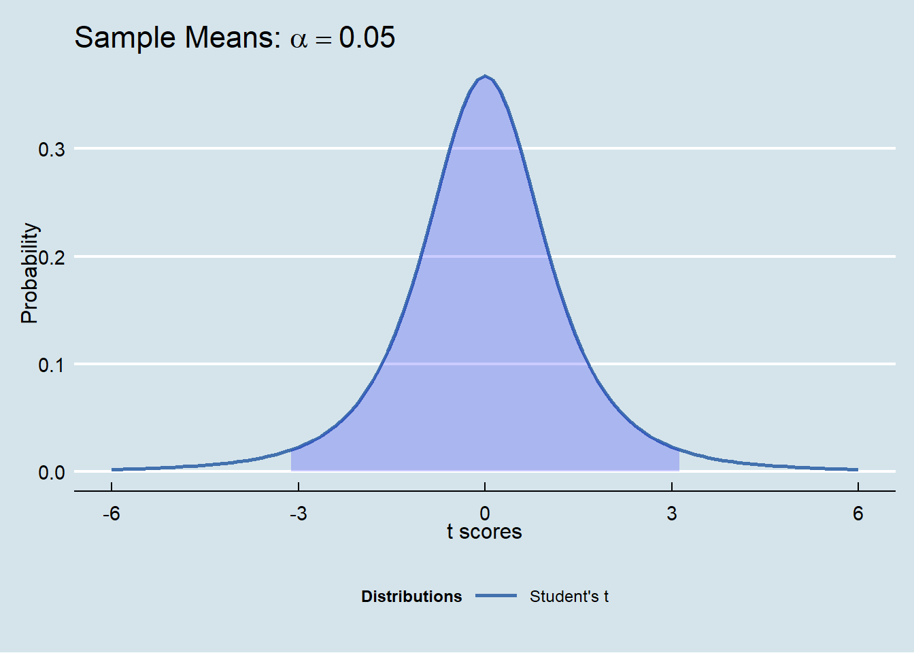
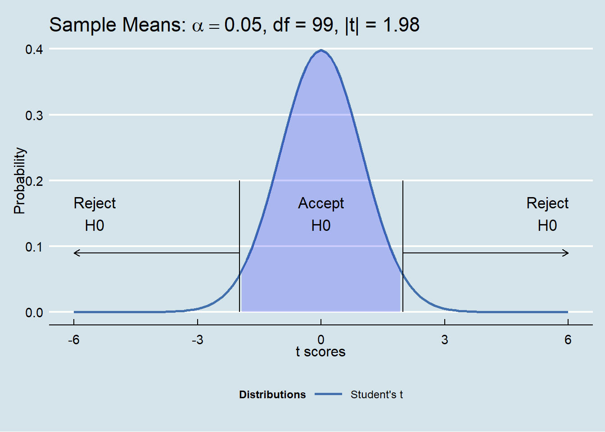
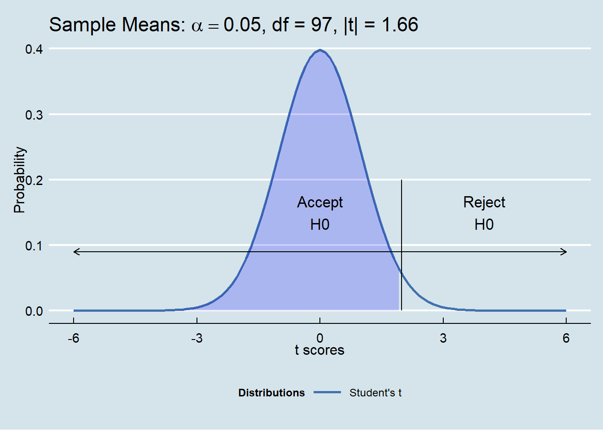

Chapter 12 More Inference: Hypothesis Testing
12.1 Imagine this
An online startup company carefully and thoroughly searches documents on behalf of clients from a variety of domains including science, engineering, healthcare, and finance.
The company has access to a huge corpus of information for each domain.
Researchers express their information needs through queries in terms of topics, categories, and individual words, as well as by reference through citations of work product.
Queries are input to a search engine, the output of which matches queries with information objects in the corpus.
The company measures its performance in terms of
Information retrieval coverage as the fraction of objects the searcher discovers, and
The fraction of objects that are relevant to the search.
12.1.1 Two errors are possible
Retrieval faces off with relevance. Two errors are possible:
| Retrieved | Not Retrieved | |
|---|---|---|
| Revelant | OK | False Negative |
| Not Relevant | False Positive | OK |
Type I Error: the False Negative means the researcher did not retrieve relevant information.
Type II Error: the False Positive means that the research retrieved irrelevant information.
How can the research company control for error? Be specific: How can the company ensure that the number of retrieved and relevant documents per day is as high as possible?
12.1.2 Control is probability
Here is what the company does:
- Management makes an assumption and forms a hypothesis about the average rate of documents found in searches. This is a precise statement about a specific metric. Here the metric is the average number of retrieved and relevant documents per day, \(\mu\), Suppose this target level is 1000 documents per day.
The null hypothesis (\(H_0\)) is that the population metric equals a target value \(\mu_0\) or \(H_0: \mu = \mu_0\). Suppose that \(H_0: \mu = 1000\).
The alternative hypothesis (\(H_1\)) is that the population metric does not equal (or is just greater or less than) the target value. Thus we would have \(H_1: \mu \neq 1000\).
- Corporate policy sets a degree of confidence in accepting as true the assumption or hypothesis about the metric. The company determines that 95% of the time \(\mu = 1000\). This means there is an \(\alpha =\) 5% significance that the company would be willing to be wrong about rejecting that \(H_0: \mu = 1000\) is true.
Under the null hypothesis it is probable that above or below a mean value of 1000 there is an error of \(\alpha = 0.05\) in total, or \(\alpha / 2 = 0.025\) above and \(\alpha / 2 = 0.025\) below the mean.
Because management expresses the alternative hypothesis, \(H_1: \mu \neq 1000\), as “not equal” then this translates into a two-tailed test of the null hypothesis.
What if management expressed the alternative hypothesis as \(H_1 > 1000\)?
12.2 On to the unknown
Let’s now suppose we do not know the population standard deviation. Now the sample standard deviation is also a random variable, like the sample mean. In practice this is nearly always the case. What do we do now?
Use the Student’s t distribution to correct for confidences that are, well, not so confident.
Here’s a plot of the Student’s t overlaid with the normal distribution.

What do we notice?
Normal is more pinched in than t (kurtosis? right!)
t has thicker tails than normal
Let’s check that: in Excel use
=T.INV(2.5%,3)which returns-3.18, and where the degrees of freedom \(df\) of our 4 sample billings from our work in confidence intervals is \(df = n - k = 4 - 1 = 3\). Here \(n\) is the sample size of 4 rnadomly sampled billings and \(k\) is the number of estimators we are building, just one in this case \(\mu\).Thus for the t distribution it takes 3.18 standard deviations below the mean to hit the 2.5% level of cumulative probability. It only took 1.96 standard deviations on the normal distribution.
There are \(k=3\) degrees of freedom because it only takes 3 out of the 4 sampled billings to get the third sampled billing (we do this by using 1 estimator, the mean we calculated).
That it took fewer standard deviations for the normal than for the t distribution to hit the 2.5% level of cumulative probability means that the t distribution is thicker tailed than the normal.

12.2.1 By the way, who is Student?
“Guiness is Good for You”
W. S. Gosset (1876-1937) was a modest, well-liked Englishman who was a brewer and agricultural statistician for the famous Guinness brewing company in Dublin.
Guiness insisted that its employees keep their work secret, so he published the distribution under the pseudonym “Student” in 1908.
This was one of the first results in modern small-sample statistics.
12.3 On with our story…
When management does not know the population standard deviation, the analyst must use the Student’s t distribution to correct for small sample sizes. As this is almost always the case for hypothesis testing, management has decreed that the Student-t distribution will be used for hypothesis testing.
- CONTINUED — management decides on regions of the distribution for acceptance that the null hypothesis is probably true and for rejection of the null hypothesis as well. This picture tells those and about 900+ more words.

Management takes a random sample of \(n = 100\) searches. An analyst then computes the sample average \(\bar X = 980\) of retrieved and relevant searches with a standard deviation of \(s = 80\), meant to represent the very unknown population \(\sigma\).
They then compute the \(t\) score, just like the z-score for the normal distribution:
\[ t = \frac{\bar X - \mu_0}{s / \sqrt{n}} = \frac{980 - 1000}{80 / \sqrt{100}} = -2.5 \]
and compare this value with the the acceptance region of the null hypotheses \(H_0\). So, what is this value?
- For a sample size of \(n = 100\) and \(k = 1\) estimator (\(\bar X\)), the degrees of freedom \(df = n - k = 100 - 1\). Under a Student’s t distribution with 99 \(df\), and using Excel’s
=T.INV(0.025, 99), the region is bounded by t scores between \(-1.98\) and \(+1.98\).
The computed t score is -2.5 and falls in the rejection region of the null hypothesis.
The analyst can report that she is 95% confident that management may reject the null hypothesis that reseachers retrieve 1,000 relevant documents each day.
Another way of reporting this is that there is a 5% probability that management would be wrong in concluding that researchers do not retrieve 1,000 relevant documents each day.
12.4 What about two shifts?
Now management wants to know how two different shifts of researchers compare. Specifically, management has been assuming that the day shift (shift 1) retrieves more relevant documents than the night shift (shift 2).
The analyst formulates the null hypothesis that the mean relevant retrieved documents in one day is the same for both shifts, and thus their difference is zero, or as \[ H_0: \mu_1 - \mu_2 = 0 \] and the alternative hypothesis as \[ H_1: \mu_1 - \mu_2 >0. \]
This is a one-tailed test where the \(\alpha = 0.05\) significance level region of the rejection of the null hypothesis \(H_0\) is entirely in the upper tail of the Student’s t distribution.
The number of degrees of freedom now equal all of the observations from the night and the day shift minus the number of estimators, now equal to 2, or, \(n_1 + n_2 - 2\).
If the analyst samples \(n_1 = 45\) searches from the day shift and \(n_2 = 54\) searches from the night shift, then the number of degrees of freedom is \(n_1+n_2-2 = 99 - 2 = 97\).

- The analyst samples 45 searches in the day shift (shift 1) and 54 searches in the night shift (shift 2), and uses the same \(\alpha = 0.05\) significance level for rejection of the null hypothesis. She estimates
\(\bar X_1 = 600\) with \(s_{\bar X_1}=60\)
\(\bar X_2 = 540\) with \(s_{\bar X_2}=68\).
Her next job is to pool (also known as “aggregate”) the standard deviations together since the risk associated with the null hypothesis relates to two pooled sample means \(\bar X_1 - \bar X_2 = 600 - 540 = 60\). The analyst assumes that the two samples are not at all correlated with one another. \[ s_{\bar X_1 - \bar X_2 } = \sqrt{\frac{s_1^2}{n_1}+\frac{s_2^2}{n_2}} \] \[ = \sqrt{\frac{60^2}{45}+\frac{68^2}{54}} = 12.87 \] and calculates the \(t\) score as \[ t = \frac{(\bar X_1 - \bar X_2) - (\mu_{0,1} - \mu_{0,2})}{s_{\bar X_1 - \bar X_2 }} = \frac{60 - 0}{12.87} = 4.66 \]
A \(t\) score of 4.66 means that the score, and the difference between the means, is in the region of rejection of the null hypothesis.
There is at most a 5% chance that management is wrong in its assertion that the day shift out performs the night shift.
Another interpretation is possible. Using Excel the analyst can calculate
= 1 - T.DIST(4.66, 97)= 0.0005% which is the so-calledp-valueor cumulative probability greater than \(t=4.66\) that she was wrong about the rejection of the null hypothesis, very slim indeed.The analyst compares the
p-valuewith the significance level of 5% and sees that there is an even slimmer chance of a Type I false negative error than indicated simply by looking at the rejection region.
12.5 Exercises
- An electric car manufacturer buys aluminum alloy sheets of 0.05 of an inch in thickness. Thick sheets are too heavy and thin sheets imbalance the axle loads on icy and rainy road surfaces. The purchasing officer along with a manufacturing engineer samples 100 sheets of a shipment before accepting it and calculates an average of 0.048 inches in thickness with a standard deviation of 0.01 of an inch.
At a 5% level of significance, should the purchasing officer accept the shipment?
What is the probability that the purchasing officer is wrong about rejecting the null hypothesis?
- A real estate developer is comparing construction wages in two markets. In New York, using a random sample of 150 workers, the average daily wage is $1,800 with a standard deviation of $500 per day. In Los Angeles, for the same skills and experience, a random sample of 125 workers yields a daily wage average of $1,700 per day with a standard deviation of $450 per day.
Is there a significant difference in wage levels between the two cities at the 5% level?
What is the probability of being wrong about rejecting the null hypothesis?